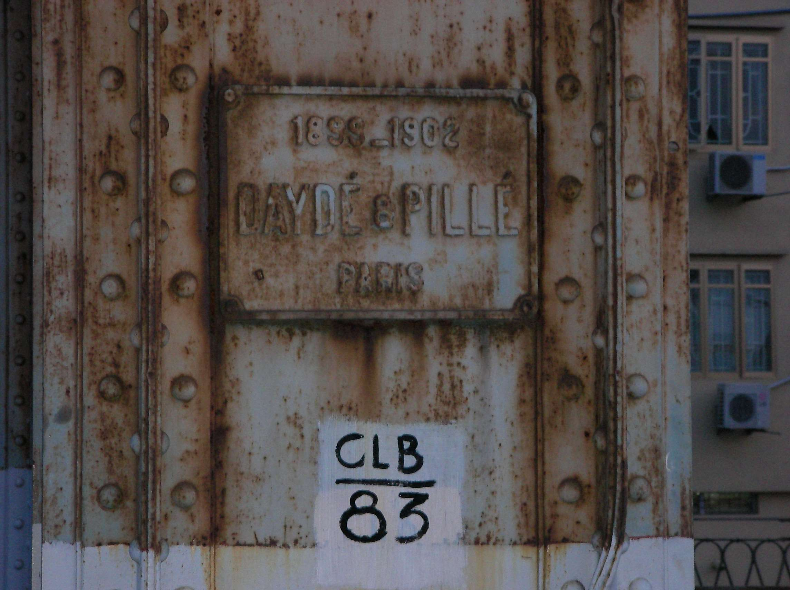
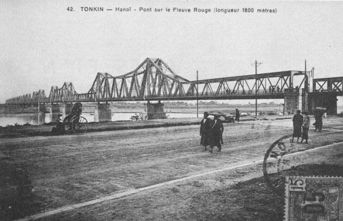

1.Long Bien Bridge
Long Bien Bridge (Vietnamese: Cầu Long Biên) is a historic cantilever bridge across the Red River that connects two districts, Hoan Kiem and Long Bien of the city of Hanoi(click here for more information..), Vietnam. It was originally called Paul Doumer Bridge.
The bridge was built in 1899–1902 by the architects Daydé & Pillé of Paris, and opened in 1903. Before North Vietnam's independence in 1954, it was called Paul-Doumer Bridge, named after Paul Doumer – The Governor-General of French Indochina and then French president. At 2.4 kilometres (1.5 mi) in length,it was, at that time, one of the longest bridges in Asia. For the French colonial government, the construction was of strategic importance in securing control of northern Vietnam. From 1899 to 1902, more than 3,000 Vietnamese took part in the construction.
in 1899–1902 by the architects Daydé & Pillé of Paris

It was heavily bombed during Vietnam War due to its critical position (the only bridge at that time across the Red River connecting Hanoi to the main port of Haiphong). The first attack took place in 1967, and the center span of the bridge was felled by an attack by 20 United States Air Force (USAF) F-105 fighter-bombers on 11 August.CIA reports noted that the severing of the bridge did not appear to have caused as much disruption as had been expected.On 10 May 1972 the bridge was attacked in the first Operation Linebacker attacks in response to the North Vietnamese Easter Offensive. On 13 May the USAF announced that several spans of the bidge had been destroyed by laser-guided bombs (LGB). On 9 August the USAF announced that another LGB attack had disabled the newly repaired bridge.On 11 September the USAF attacked the bridge again as repairs were nearing completion. The defence of Long Bien Bridge continues to play a large role in Hanoi's self-image and is often extolled in poetry and song.
2.Train Street
Ngõ 224 Lê Duẩn is a narrow alley in Hanoi’s Old Quarter, known as “The Train Street”, which sees a twice-daily speeding train pass close to buildings on either side of the tracks (the railroad tracks take up nearly the entirety of the “train street”). The track was built by the French in 1902 and is still an active rail line as of 2019.
The train passes at 3pm and 7pm daily, on the rail line between Hanoi and Ho Chi Minh City in the south. The alley is so narrow that local residents must remove their personal belongings, including bicycles and children, before the train passes. Locals often sit on the tracks, drinking tea and playing checkers. The street has become a popular tourist stop in Hanoi, but was closed to tourists by local authorities in October 2019 for security reasons, fearing a severe accident. Tourists would often stop and take pictures to post on social media along the narrow alley. In more recent times, the street was home to squatters and drug addicts amongst numerous cafes and residential buildings. The overcrowded street caused the need to reroute a local train on October 6, 2019, prompting the closure. Local cafes have sprung up to serve the bustling tourist trade along the street and owners are concerned over the loss of business the closure will bring. [5] The VN Express newspaper cites a train driver that has had three close calls with tourists on the tracks, once only stopping only meters from the woman who was taking pictures of the train.
Tourists can safely watch the train from the outdoor seating areas of the local cafes; owners will typically move their stools closer to the wall and advise patrons to do so as the train approaches. Many will also post train times on chalk boards in their establishments.